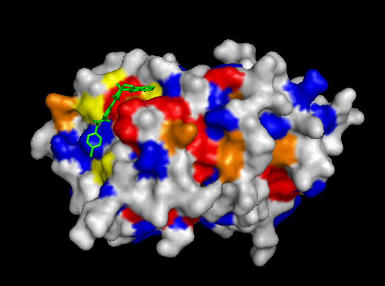
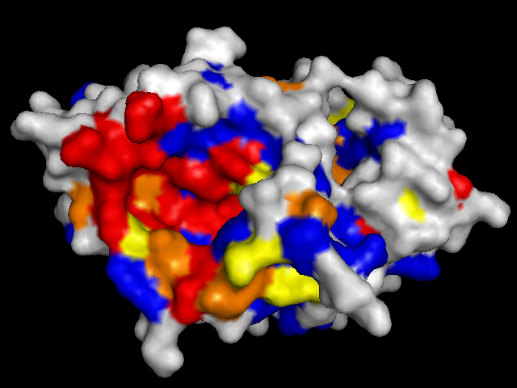
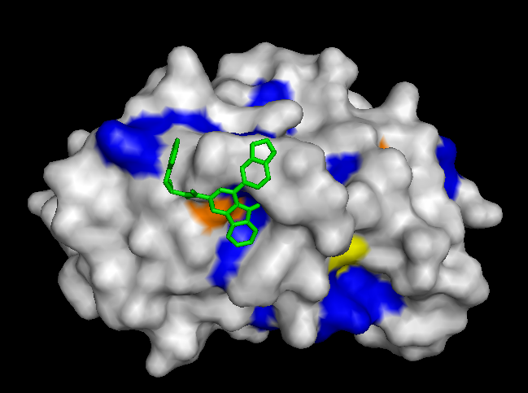
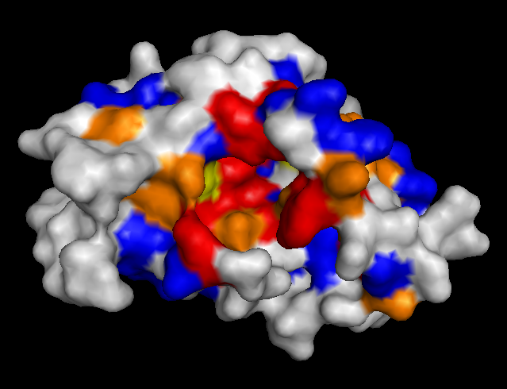
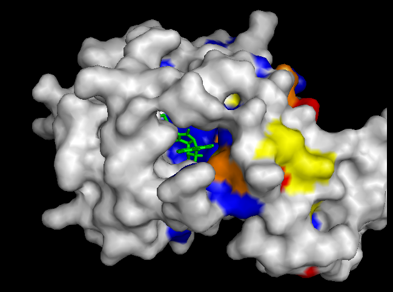
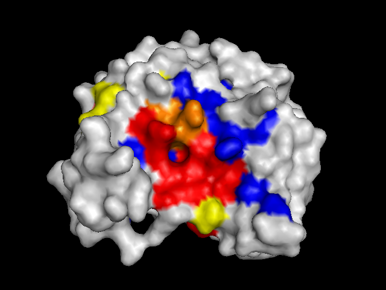
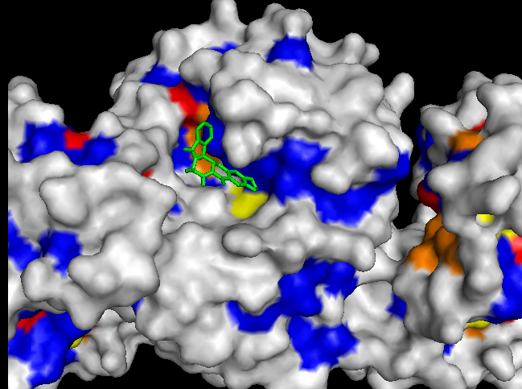
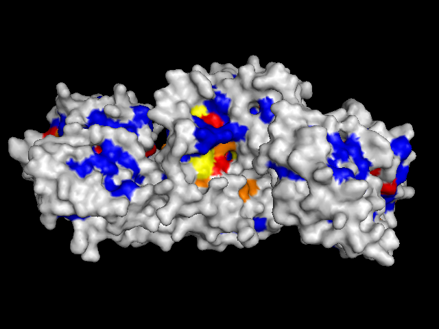

|
Our results indicated that ligands tend to bind most strongly in pockets with conserved residues.
To validate our results we docked a subset of the NPD ligands (about 10,777) in two search spaces: (1) where we expected the best scores, and (2) where we expected the worst scores (based on conservation). The images on the left (a..d) show ligands docked by Vina in a search space centered on an area characterized by low conservation. Consequently, we expected the top scores for each protein to be worse in this case than in the case where we docked ligands in search space that contained known or predicted active sites. Images (a) and (b) are just as we expected -- the scores are worse (they are less negative) than the same ligands docked on the "front". However, images (c) and (d) show that ligands scored better at the "back". We have been focussing on conservation but surface topology is important too. Image (c) shows a ligand that scores much better docking at the "back" than the "front". This appears to be due to a deep pocket with moderate conservation. The intensely conserved area shown in image (g) lacks a substantial pocket, which indicates that conservation is not the only thing that matters. Images (d) and (h) are ambiguous -- neither presents an obvious active site -- nonetheless the binding site is proximate to conserved residues. |
|
|  |  |
| (a) FtsZ back: -8.4 kcal/mol | (e) FtsZ front: -11.9 kcal/mol (ligand not shown) |
|---|---|
|  |  |
| (b) CoaD back: -6.6 kcal/mol | (f) CoaD front: -9.6 kcal/mol (ligand not shown) |
|  |  |
| (c) YwtF back: -11.4 kcal/mol | (g) YwtF front: -9.0 kcal/mol (ligand not shown) |
|  |  |
| (d) RacE back: -8.3 kcal/mol | (h) RacE front: -7.6 kcal/mol (ligand not shown) |